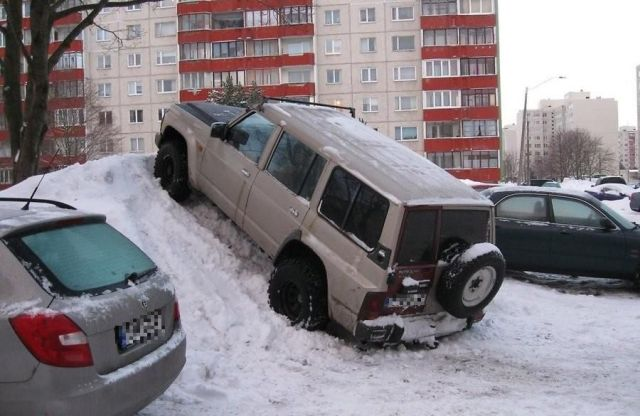
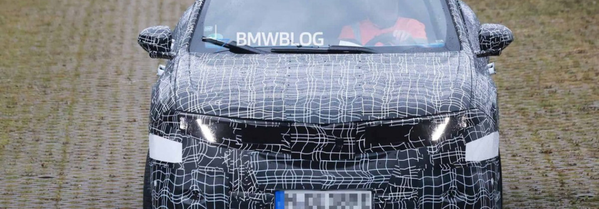
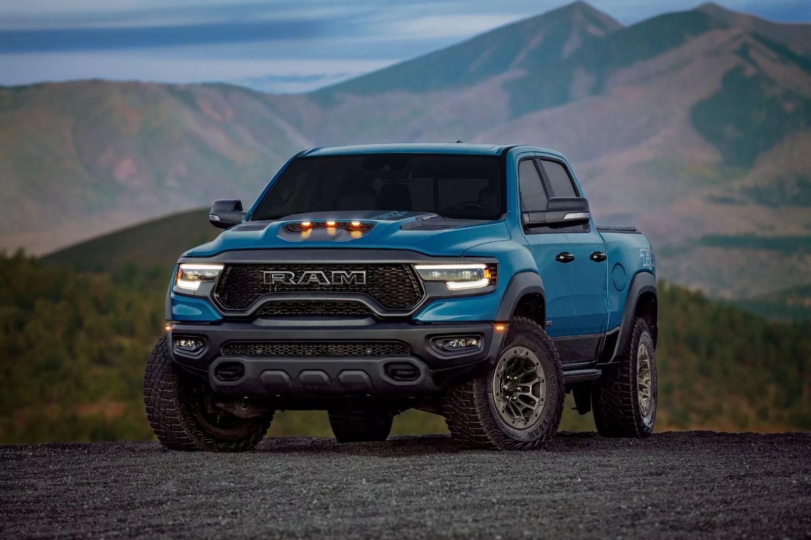

Вредна ли для автомобиля парковка под уклоном?
Изнашиваются втулки стабилизатора и сайлент-блоки
Чисто в теории — да. Однако куда сильнее пружины и амортизаторы нагружаются от регулярного перевоза всяческого балласта на лишние 20–30 кг. Ведь особо «рачительные» автовладельцы годами возят с собой большой подкатной домкрат, с десяток литров техжидкостей, компрессор, огнетушитель, мощный трос, набор инструментов и прочий скарб, включая запчасти. Все перечисленное запросто может тянуть на несколько десятков килограммов, однако данный факт никого не смущает.

BMW iX3 Neue Klasse SUV
Грядущий полностью электрический BMW iX3 Neue Klasse SUV (кодовое имя NA5) приближается к своему официальному дебюту. Новые шпионские фотографии, сделанные во время тестирования в Венгрии, дают наиболее полное представление об этом автомобиле.

Последний год для текущего RAM 1500 TRX, хотя компания намекнула на его возможное возвращение.
RAM 1500 TRX перевернул сегмент пикапов с ног на голову, когда был представлен в 2020 году, но теперь его отправляют в учебники истории, поскольку производство подходит к концу.
Однако пока дело не ушло в прошлое, поскольку компания представила версию «Final Edition».
Созданный для того, чтобы дать клиентам последний шанс «владеть частичкой автомобильной истории», RAM 1500 TRX Final Edition 2024 года будет доступен в восьми цветах кузова, включая три уникальных: Delmonico Red, Night Edge Blue и Harvest Sunrise и получит колеса с бэдлоками и отделкой Satin Titanium.